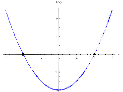
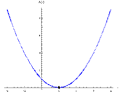
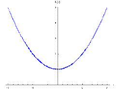

Quadratic Equations
You can solve any quadratic equation bya) completing the square
b) quadratic formula
Ex) Complete the square to solve $2x^2-8x-16=0$
| 1) make '$a$' coefficient 1 | $x^2-4x-8=0$ |
|---|---|
| 2) move constant to other side | $x^2-4x=8$ |
| 3) take $1/2$ the '$b$' coefficient & square it | $(-2)^2=4$ |
| 4) add this value to both sides | $x^2-4x+4=8+4$ |
| 5) factor left side | $(x-2)^2=12$ |
| 6) square root both sides & solve | $\table x-2=±√{12}; x=2±2√{3}$ |
given $ax^2+2bx+c=0$, where $a≠0$ ...
$x={-b±√{b^2-4ac}}/{2a}$ w/ $b^2-4ac$ being the discriminant
The discriminant determines the nature of the roots
$x={-b±√{b^2-4ac}}/{2a}$ w/ $b^2-4ac$ being the discriminant
The discriminant determines the nature of the roots
| Discriminant | $b^2-4ac>0$ | $b^2-4ac=0$ | $b^2-4ac<0$ |
|---|---|---|---|
| Nature of the Roots | 2 disctinct real roots | exactly 1 real root | no real roots (2 distinct imaginary roots) |
| Graph |  |  |  |
Use the discriminant to determine the nature of the roots of $x^2-6x+13=0$
$\table b^2-4ac\text" ? "0; (-6)^2-4(1)(13)\text" ? "0; 36-52\text" ? "0; -16<0$
no real roots (2 distinct imaginary roots)
Solve for these 2 distinct imaginary roots
$\table x={-b±√{b^2-4ac}}/{2a}; x={-(-6)±√{(-6)^2-4(1)(13)}}/{2(1)}; x={6±√{-16}}/{2}; x=6/2±{4i}/{2}; x=3±2i$
$\table b^2-4ac\text" ? "0; (-6)^2-4(1)(13)\text" ? "0; 36-52\text" ? "0; -16<0$
no real roots (2 distinct imaginary roots)
Solve for these 2 distinct imaginary roots
$\table x={-b±√{b^2-4ac}}/{2a}; x={-(-6)±√{(-6)^2-4(1)(13)}}/{2(1)}; x={6±√{-16}}/{2}; x=6/2±{4i}/{2}; x=3±2i$
Conjugates
Complex Conjugate Theorem
Given $a \text" & " b$ are real #s with $b≠0$.
If $a+bi$ is a root, then $a-bi$ is also a root.
Complex Conjugate Theorem
Given $a \text" & " b$ are real #s with $b≠0$.
If $a+bi$ is a root, then $a-bi$ is also a root.
Homework Video